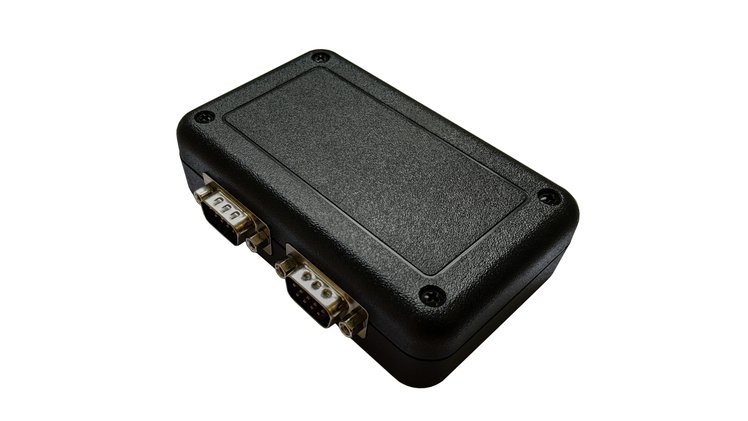
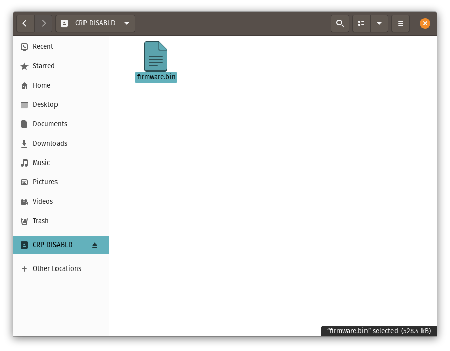
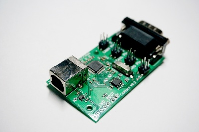
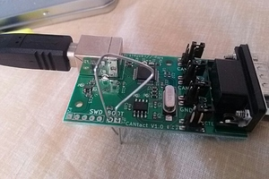

Introduction
This "book" provides documentation for the CANtact hardware devices and related hardware. It also provides information on some device agnostic software tools including SocketCAN.
The content here is generated by mdBook, and the source code is available on Github. If you find any issues with the information here, please create a Github issue (or even better, submit a pull request 😉).
CANtact Pro User Guide

CANtact Pro is available from CrowdSupply
Getting Started
Thank you for buying a CANtact Pro 🙂
To start using CANtact, connect it via USB. Before using, you should update to the latest firmware following the instructions in this document.
After updating, the device will work on Linux via SocketCAN. For details, see SocketCAN.
On all platforms, you can install the CANtact CLI. For details, see CANtact CLI.
For more information on software support, see Software Tools.
Features & Specifications
- 2x CAN Interfaces
- 1x CAN/CAN-FD/SWCAN
- 1x CAN/CAN-FD
- High Speed USB interface (480 Mbit/s)
- Isolation between CAN and USB
- Industry standard DB9 connectors
- Software support for Windows, macOS, and Linux
- Cross-platform USB driver, command line interface, and APIs:
- Python (via python-can)
- C / C++
- Rust
- ETAS BUSMASTER support on Windows
- SocketCAN support on Linux
- Cross-platform USB driver, command line interface, and APIs:
Pin Assignments
| Pin | Function | CAN 0 Only? |
|---|---|---|
| 1 | ||
| 2 | CAN - | |
| 3 | GND | |
| 4 | SWCAN | Yes |
| 5 | ||
| 6 | GND | |
| 7 | CAN + | |
| 8 | ||
| 9 | +12 V In | Yes |
Note that single-wire CAN is only available on the CAN 0 connector.
LED Indicators
The device has four LEDs, two for each CAN channel. When powered on, the LEDs will blink in sequence. The LED indications during normal operations are shown here.
| Color | State | Meaning |
|---|---|---|
| Green | Solid | channel enabled, no activity |
| Green | Blinking | receive activity |
| Red | Solid | channel transmit enabled, no activity |
| Red | Blinking | transmit activity |
When using SocketCAN, each CAN interface can be identified by blinking the corresponding LEDs using ethtool. This is especially useful when using multiple devices.
sudo ethtool --identify can0
Configuring Permissions on Linux
By default, root privileges are required to interact with the device. To allow other users to access the device,
create a file at /etc/udev/rules.d/99-cantact.rules:
SUBSYSTEM=="usb", ATTRS{idVendor}=="1d50", ATTRS{idProduct}=="6070", MODE="0666"
After creating the file, reload the udev rules:
sudo udevadm control --reload-rules
sudo udevadm trigger
This will make the device accessible to all users.
Flashing Firmware
- Download the newest firmware binary from Github.
- To enter bootloader mode, hold down the button beside the USB connector while connecting the device to your computer.

The device will appear as a USB Mass Storage device with the label CRP DISABLD. Open the device. It should contain a single file: firmware.bin.

- Delete the
firmware.binfile from the device. - Copy the downloaded
firmware.binfile to the folder. - Eject the device
- Unplug and reconnect the device. The firmware update is complete!
CANtact

The CANtact device is a single channel USB CAN interface. It can be used to connect to CAN bus systems, including cars, heavy duty vehicles, and industrial automation systems. CANtact works on Linux, OS X, and Windows.
With a CANtact and an OBD-II to DE9 cable, it is very easy to get onto the OBD-II CAN bus of any CAN enabled vehicle.
Getting Started
Connections & Jumpers
CANtact uses a USB-B cable to interface with your computer. These cables are commonly used to connect printers as well.
The DE9 connector of the CANtact allows for two pin mappings for different use cases:
- Pins 7 (CAN high), 2 (CAN low), and 3 (ground) for standard CAN connections
- Pins 3 (CAN high), 5 (CAN low), and 1 (ground) for use with an OBD-II to DB9 cable. This is compatible with the Sparkfun OBD-II cable.
The pins can be selected using the jumpers on board.
The final jumper is for CAN termination. Place the jumper beside the "CTE" marking to place 120 ohms across CAN high and CAN low. This is commonly used in development, when you are only interfacing with a single CAN device.
CandleLight Firmware
To use the tools discussed in this book, you must ensure your CANtact is running the CandleLight firmware. The firmware can be downloaded from Github.
After downloading, follow the steps in Updating Firmware to perform the update.
Updating Firmware
The CANtact can be updated over USB. First, you will need to put the device into DFU mode by following these steps:
- Disconnect the USB cable from the CANtact
- Connect the two "BOOT" pins

- While the pins are connected, plug the USB cable into the CANtact
- The CANtact device is now in DFU mode
The next steps depend on what OS you are using.
Windows
- Install the ST DfuSe Tool
- Open the DfuSe tool
- Click "Choose..." and select a DFU firmware file
- Check the "Verify after download" box
- Click Upgrade
- Wait for the "Verify successful !" message at the bottom of the window.
- Unplug the USB cable, disconnect the "BOOT" pins, and reconnect the USB cable. The device is now updated!
Linux & macOS
Flashing on Linux and macOS requires dfu-util.
On macOS, this can be installed from Brew: brew install dfu-util.
On Ubuntu, install dfu-util with: sudo apt install dfu-util.
Once dfu-util is installed, use it to flash the device:
sudo dfu-util --dfuse-address -d 0483:df11 -c 1 -i 0 -a 0 -s 0x08000000 -D FIRMWARE_FILE.bin
Once this is complete, unplug the USB cable, disconnect the "BOOT" pins, and reconnect the USB cable. The device is now updated!
Software Tools
This section provides details on software tools with support for CANtact. Some of these tools have been created specifically for CANtact, while others support a variety of CAN interfaces.
CANtact Command Line Interface
The CANtact Command Line Interface (CLI) is a cross-platform tool with basic CAN functionality. These can be used to send and receive frames on Windows, macOS, and Linux.
Building the CLI
Building the CLI requires Rust, which can be installed using rustup.
Once Rust is installed, install CANtact using cargo.
cargo install cantact
Running the CLI
The CLI provides a single binary named can. To get help, run can --help.
SocketCAN
SocketCAN is supported out of the box. Just connect a CANtact to a Linux system and CAN interfaces will appear. For details on using SocketCAN devices, see the SocketCAN section of this book.
BUSMASTER
ETAS BUSMASTER is an open source tool software for simulating, analyzing, and testing CAN and LIN networks. BUSMASTER only supports Windows.
A fork of BUSMASTER which implements CANtact support is available. A pre-built installer can be downloaded from the releases page.
APIs
The CANtact driver provides APIs to allow developers to build custom CAN-enabled applications. Currently, API support exists for Rust, Python, C, and C++.
Rust
The CANtact driver can be used as a Rust library. The library is self-documenting, and documentation for the latest version can always be found on docs.rs.
Python
A Python API is implemented by the CANtact driver. This can be used directly, but it is recommended to use
the python-can library. Both components can be installed using pip:
python3 -m pip -U pip
python3 -m pip install cantact git+https://github.com/ericevenchick/python-can@cantact
If no binary release exists for your platform, the driver can be built manually. For details, see the README.
Once CANtact and python-can are installed, the bundled tools can be used. For example,
to log frames on CAN 0 at 500000 kbit/s:
can_logger.py -i cantact -c 0 -b 500000
Examples
Examples of using the Python API directly and through python-can are
available on Github.
C / C++
The C / C++ API is a work in progress. This API is used to implement support for ETAS BUSMASTER on Windows. It currently only works on Windows.
Cross-platform support and documentation is a work in progress.
SocketCAN
SocketCAN is a collection of CAN drivers and networking tools for Linux. It allows interfacing with CAN bus devices in a similar fashion as other network devices. This allows for developers to write code that can support a variety of CAN bus interfaces, including CANtact. Unfortunately, SocketCAN only works on Linux.
This section provides an overview of common SocketCAN usage.
Getting SocketCAN
Specifics for installing SocketCAN will depend on your Linux distribution.
Ubuntu & Debian
SocketCAN is built into the kernel provided with these systems. You will need to install the can-utils package to use the SocketCAN utilities (candump, cansend, etc...):
sudo apt-get install can-utils
Hardware Devices
A hardware device is required to connect to a real CAN bus. When using hardware SocketCAN devices, each hardware CAN channel is given a number based on the order which the devices were connected in. The first device's first channel will be can0.
To set up a device with channel can0 at a bitrate of 500000 kbps:
- Connect the device to a Linux computer
- Set the device bitrate:
sudo ip link set can0 type can bitrate 500000
- Bring the interface up:
sudo ip link set up can0
Virtual Devices
Virtual CAN devices, or vcan devices, can be used to simulate a CAN bus without any hardware. This is useful for simulation, testing, and bridging. It also lets you try out can-utils without having an actual CAN device.
To create a vcan device run:
sudo ip link add name vcan0 type vcan
Once created, the device can be used like a hardware device. It does not require a bitrate setting, but the interface must be enabled before use:
sudo ip link set up vcan0
Utilities
The SocketCAN utilities provide simple command-line tools for interacting with CAN buses.
candump
candump displays messages on the specified CAN bus. To show all traffic in real time on device can0:
candump can0
The displayed messages can be filtered using a mask and identifier. Two filter types are available:
[can_id]:[can_mask]matches when[received_can_id] & [can_mask] == [can_id] & [mask][can_id]~[can_mask]matches when[received_can_id] & [can_mask] != [can_id] & [mask]
Examples
Only show messages with ID 0x123 on vcan0:
candump vcan0,0x123:0x7FF
Only show messages with ID 0x123 or ID 0x456 on can3:
candump can3,0x123:0x7FF,0x456:0x7FF
cansend
cansend sends a single CAN frame on the bus using the specified identifier and data bytes. For example:
cansend can0 123#1122334455667788
This sends a message on interface can0 with identifier 0x123 and data bytes [0x11, 0x22, 0x33, 0x44, 0x55, 0x66, 0x77, 0x88]. This tool assumes all values (ID and data) are provided in hexadecimal.
cangen
cangen can generate random CAN data, which can be useful for testing. Run cangen for detailed usage information.
cansniffer
cansniffer displays frames that are currently on the bus, but filters out frames with data that is not changing. This is very useful for reverse engineering CAN bus systems. Run cansniffer for detailed usage information.
ISOTP
The can-utils package contains tools for working with ISOTP. However, the kernel ISOTP support needed by these tools is not available by default on most systems. This results in an Protocol not supported error when running ISOTP tools.
The can-isotp kernel module and build instructions are available on Github
Testing ISOTP Driver
To use ISOTP, you will need two physically connected CAN channels (or gatewayed virtual CAN devices) to send and receive data. Once set up, start isotprecv:
isotprecv -s456 -d123 can1
In another terminal, run isotpsend to send ISOTP data. This tool reads from standard input, so echo is used to provided data as a sequence of space seperated hexidecimal bytes:
echo "de ad be ef de ad be ef aa bb cc dd" | isotpsend -s123 -d456 can0
The data should appear in isotprecv.
Hacking
Want to hack on CANtact? Great!
All CANtact related development takes place on Github. If you find a bug, please file an issue there. There are several relevant repositories containing code and design files.
CANtact CLI and Driver
The CANtact CLI and Driver are written in Rust. The repository can be found on Github.
CANtact Pro
Design files and firmware for CANtact Pro:
Hardware
CANtact Pro is designed using the open source KiCAD EDA suite.
Firmware
The CANtact Pro is powered by an NXP LPC546xx series microcontroller (specifically, the LPC54616J512BD100).
NXP provides their MCUXpresso IDE free of charge, which can be used to develop and debug firmware for the device.
Support
Need help with CANtact?
If your hardware appears to be defective, please contact us at hello@linklayer.com.
If you have found a bug, please leave a ticket on the relevant Github repository. For a full list, see Hacking.
Need commercial support? Developing custom CAN tooling? Contact us: hello@linklayer.com.